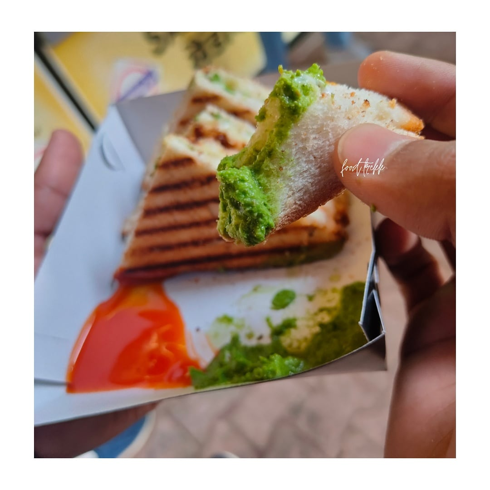
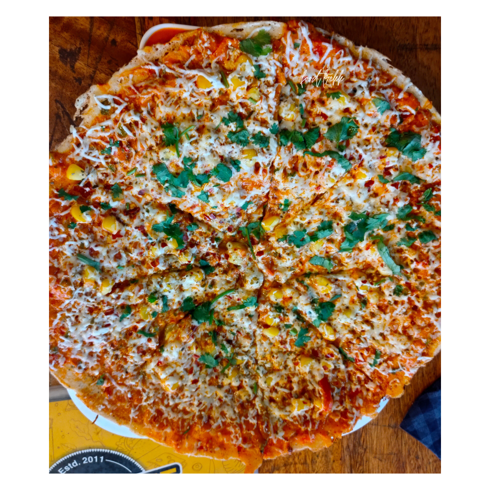

|
This place is best for sandwiches, here you will get multiple varieties in sandwiches and I've tried every single sandwich present in their menu and everytime while eating it feelings are always to the next level😍. My recommendation is Mozrella Cheese Melt Sandwich and Pizza Sandwich. If you are visiting this place for the first time then you should start with this😉 So if you visit raipur or if you are from raipur then go and visit this place and enjoy your sandwiches because they are too good😍❤️. The food trekk is not over yet. So Stay Tuned And Have It Guys...😍 📍 Sanwich Junction, Marine Drive, Raipur ( C.G ). Know More |
 |
|  |
The food trekk is not over yet. So Stay Tuned and Have It Guys...😍 📍 Corn Bite, Katora Talab, Raipur ( C.G ). Know More |